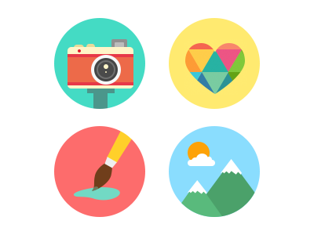
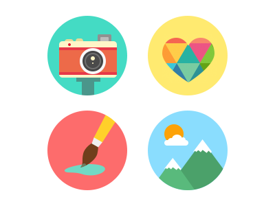

- Home
- Skills
- Portfolio
- Resume
- Social

Lara Michelle J. Porsuelo
Sison, Pangasinan
Hello everyone! My name is Lara Michelle J. Porsuelo. Currently residing in Puguis, La Trinidad, Benguet. I am the 2nd child of Mr. & Mrs. Michael C. Porsuelo. I have 3 siblings. The oldest: Clarisse Mae J. Porsuelo, 26, My younger brother: Keith Michael J. Porsuelo, 15 and the youngest: Cziah Marie J. Porsuelo, 1 year old. My early childhood was a typical middle class environment. My dad worked as a cook and my mom is a teacher up until now. I had a happy, normal childhood, leaving me somewhat spoiled. Not until my younger siblings came. I used to get whatever I want in my primary school days and when secondary level hits, I had to strive to get what I want. It was a good training ground. I thank my parents for letting me do what I want and making me realize striving is better than waiting.
Time flies so fast and now I'm at my College year. Taking up Bachelor of Science in Information Technology, currently in 3rd year level. I work at home to earn and save some money for my studies, necessities and wants. I am an English tutor for 2 years now.
I love reading novel books, watching movies and sketching. I also love to meet new people and to hang out with my family and friends. I would love to travel too.

King's College of the Philippines
Pico, La Trinidad, Benguet

I am now taking up BS IT major in Web Development. Currently in 3rd year level. KCP's Campus has the cleanest campus I've ever seen. It interests me to see the students come and play in the functional gym every afternoon.
Thing's I'm Passionate About
 


Animals Hobbies Arts


Caring Others Learning Family
Self Love
It's hard to lose yourself in the process of learning things about life. Sometimes, it makes us change. That's why in order to enjoy life to the fullest. NEVER LOSE YOURSELF